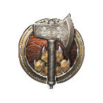
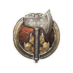

Los fuertes abrazan lo salvaje que se esconde en su interior: instintos agudos, fisicalidad primaria y, sobre todo, una rabia desenfrenada e insaciable.
Sabes que la música es más que una fantasía: es poder. A través del estudio y la aventura, has dominado el canto, el habla y la magia interna.
Los clérigos son representantes de los dioses a los que adoran y ejercen una poderosa magia divina para bien o para mal.
Los druidas canalizan las fuerzas elementales de la naturaleza y comparten un profundo parentesco con los animales. El dominio de Wild Shape les permite transformarse en bestias de todos los Reinos.
Los caballeros han dominado el arte del combate, empuñando armas con una habilidad inigualable y usando armaduras como una segunda piel.
Canaliza tu iluminación cósmica esquivando hábilmente y desmantelando eficientemente a tus enemigos a través de golpes impresionantes y un torbellino de ataques de artes marciales.
Canaliza tu iluminación cósmica esquivando hábilmente y desmantelando eficientemente a tus enemigos a través de golpes impresionantes y un torbellino de ataques de artes marciales.
Los guardabosques son exploradores y rastreadores inigualables, que perfeccionan una profunda conexión con la naturaleza para cazar a sus presas favoritas.
Con sigilo, habilidad y reflejos asombrosos, la versatilidad de un pícaro les permite tomar la delantera en casi cualquier situación.

Los hechiceros son lanzadores de conjuros naturales, aprovechando la magia inherente de un don o línea de sangre.
Unidos por un pacto con un patrón todopoderoso, los brujos cambian su lealtad por habilidades sobrenaturales y magia única.
Los magos dominan lo arcano al especializarse en escuelas individuales de magia, combinando hechizos antiguos con investigaciones modernas.
Bárbaro es una clase en Baldur's Gate 3 . La habilidad principal de los bárbaros es Fuerza , sus competencias en tiradas de salvación son Fuerza constitución , y tienen un Dado de Golpe de 1d12. Tienen competencia con armas simples , armas marciales , armaduras ligeras , armaduras intermedias y escudos. La clase Bárbaro en Dungeons & Dragons y Baldur's Gate 3 representa a un guerrero feroz y primitivo, que aprovecha su ira interior y la desata sobre sus enemigos en la batalla. Los bárbaros son conocidos por su destreza física, su resistencia y su asombrosa habilidad para soportar golpes de castigo. La característica que define a los bárbaros es su capacidad para entrar en un estado de ira primaria durante el combate. Mientras están furiosos, obtienen mayor fuerza y resistencia, lo que les otorga ventajas en el combate cuerpo a cuerpo. Sus ataques infligen más daño, ganan resistencia a ciertos tipos de daño y tienen una mayor durabilidad en el fragor de la batalla.
 Berserker
Corazón salvaje
Berserker
Corazón salvaje
 Magia salvaje
Magia salvaje
La habilidad principal de los bardos es Carisma , sus competencias en tiradas de salvación son Destreza y Carisma , y tienen un Dado de Golpe de 1d8. Tienen competencia con armas sencillas , ballestas de mano , espadas largas , estoques , espadas cortas y armaduras ligeras . La clase Bardo es un personaje clásico de Dungeons & Dragons y ha sido parte de Baldur's Gate 3 desde Early Access. Hoy en día, los Bardos continúan adornando el mundo de Faerûn con sus talentos artísticos para presentar efectos mágicos. Tradicionalmente, los bardos son considerados poetas. Una persona cuya visión artística incita una reacción de su audiencia como risa, rabia y otras emociones. En Baldur's Gate 3, los bardos pueden lanzar trucos y hechizos a través de su expresión creativa. Conocidos como los maestros del canto, el habla y la magia, se especializan en la habilidad Carisma, lo que les da una ventaja cuando se trata de persuadir a los demás. Los bardos tienen su propia lista de hechizos y canticoss a los que pueden acceder subiendo de nivel al personaje. Tienen la opción de elegir su camino a emprender una vez que alcancen el Nivel 3.
 Colegio de lore
Colegio del valor Salvaje
Colegio de espada
Colegio de lore
Colegio del valor Salvaje
Colegio de espada
La habilidad principal de los clérigos esSabiduría, su Habilidades de Tiro de Salvación son Sabiduría y Carisma y tienen un Dado de Golpe de 1d8. Tienen habilidad con armas simples, Armadura ligera, Armadura mediana, y Escudos. La clase Clerigo es excelente para apoyar al grupo con la curación así como obstaculizar las fuerzas opuestas con debuffing.Los clérigos eligen uno de muchos deidades para adorar durante su Creación de personaje, y esta selección puede afectar las interacciones dentro del juego.
 Dominio de la vida
Dominio de la luz
Dominio de la vida
Dominio de la luz
 Dominio del engañoDominio del conocimiento
Dominio de la naturaleza
Dominio de laluz
Dominio de la guerra
Dominio del engañoDominio del conocimiento
Dominio de la naturaleza
Dominio de laluz
Dominio de la guerra
La habilidad principal de los druidas es Sabiduría, sus competencias en tiros de salvación son Inteligencia y Sabiduría y tienen un Dado de Golpe de 1d8. Tienen habilidad con armas simples, Armadura ligera,Armadura mediana, y Escudos. La clase Druida proporciona mucha versatilidad, lo que la convierte en un excelente apoyo para el grupo con defensa y curación.Los druidas pueden seleccionar un círculo de druidas como subclase, lo que tiene un impacto en las interacciones dentro del juego.
Circulo de la luna Circulo de la tierra Circulo de las esporasLa habilidad principal de los luchadores es Fortaleza, sus competencias en tiros de salvación son Fortaleza y Constitución, tienen un Dado de Golpe de 1d10. Tienen habilidad con armas simples, Armas Marciales, Armadura ligera, Armadura mediana, Armadura Pesada, y Escudos El Caballero es una gran clase para una construcción de tanque. Tener la capacidad de usar todo tipo de Armadura y Escudos, puede mejorar en gran medida la capacidad de supervivencia de un Caballero y es una opción ideal para el combate 1 contra 1.
Maestro de la batalla Caballero sobrenatural CampeonLa habilidad principal de los monjes es Destreza y Sabiduría , sus competencias en las tiradas de salvación son Fuerza y Destreza y tienen un Dado de Golpe de 1d8 por nivel de monje. Tienen competencia con armas simples , espadas cortas y con ninguna. Los monjes en DnD están inspirados en las tradiciones monásticas del Tíbet y son la última incorporación a la lista de Baldur's Gate 3. Se revelaron oficialmente justo antes del lanzamiento oficial del juego y no estuvieron disponibles durante el acceso anticipado del juego. Los desarrolladores querían tener diferentes enfoques, que introducen las 3 subclases: Way of the Open Hand , Way of Shadow y Way of the Four Elements , que son interpretaciones distintas de lo que significa un monje. El Monje en Baldur's Gate 3 se centrará en diferentes habilidades de Kung Fu que variarán en estilo entre las diferentes subclases, desde habilidades elementales y hechizos hasta acciones de combate tipo ninja. En Baldur's Gate 3 , los Monjes emplean una mecánica de Acciones de juego única. Estas Acciones imitan los efectos de los hechizos, pero su característica distintiva radica en su consumo de Ki Points.
Paladín es una clase en Baldur's Gate 3 . La habilidad principal de un paladín es la fuerza , sus competencias en tiradas de salvación son sabiduría y carisma y tienen un dado de golpe de 1d10 por nivel de paladín. Tienen competencia con armas simples , armas marciales y todas las armaduras y escudos . La clase Paladín ofrece una excelente experiencia para el juego de roles, ya que los jugadores pueden experimentar el cambio de subclase a través de sus acciones posteriores. Los jugadores se enfrentarán a escenarios en los que se verán tentados a abrazar el lado oscuro, mientras luchan por mantener sus juramentos y lidiar con las consecuencias de ser calificados como rompejuramentos . Para los paladines, sus juramentos son sagrados para ellos y es por eso que pueden elegir su subclase inmediatamente en la creación del personaje . En combate, los paladines pueden brindar un gran apoyo a sus aliados que puede ayudarlos a obtener una ventaja en la batalla. Los rompejuramentos tendrán las mismas habilidades que su subclase original , pero obtendrán capacidades nuevas y siniestras.
El primario del Ranger es Destreza, su Tirada de salvación las competencias son Fortaleza & Destreza y tienen un Dado de Golpe de 1d10. Tienen habilidad con Armas simples, Armas Marciales, Escudos, Armadura ligera, y Armadura mediana. La clase Ranger es un personaje clásico de Dungeons & Dragons y ha sido parte de Baldur´s Gate 3 desde su Early Access. Hoy, los Rangers continúan explorando el mundo de Faerun con sus habilidades de caza superiores y su habilidad natural para prosperar en los climas más duros y salvajes, en medio de la flora y la fauna. Los guardabosques son considerados tradicionalmente como personajes simples capaces de atravesar la naturaleza con su arma favorita: el arco y la flecha. En Baldur´s Gate 3 Los guardabosques son capaces de dar un paso más allá, dominando su control sobre las bestias salvajes, completando sus habilidades de caza e incluso templándose en los ambientes más oscuros, eventualmente aprendiendo cómo ir más allá del material y el elenco especializado.los guardabosques tienen su propia lista deHechizosyCaracterísticas accesibles para ellos subiendo de nivel al personaje. Tienen la opción de elegir su camino a emprender una vez que alcancen el Nivel 3
La habilidad principal de los pícaros es Destreza, sus competencias en tiros de salvación son Destreza y Inteligenciay tienen un Dado de Golpe de 1d8. Tienen habilidad con armas simples, ballestas de mano, espadas largas, estoques, espadas cortas y con Armadura ligera. La clase Pícaro es ideal para acabar con objetivos desprevenidos o distraídos con ataques furtivos, así como para forzar cerraduras y desactivar trampas.
Maestro de la batalla Caballero sobrenatural CampeonLa habilidad principal del hechicero es Carisma, sus competencias en tiros de salvación son Constitución y Carisma y tienen un Dado de Golpe de 1d6. Tienen habilidad con dagas, Baston, y Ballestas ligeras. el Hechicero es una clase lanzadora de hechizos de Dungeons & Dragons y ha sido parte de Baldur's Gate 3 desde Early Access. El Hechicero es conocido por sus habilidades mágicas innatas. A diferencia de magos, que estudian y memorizan hechizos de libros de hechizos, Los hechiceros poseen una conexión innata con la magia, generalmente a través de su linaje, ascendencia o alguna otra fuente mística. Este poder innato les permite lanzarHechizos sin necesidad de preparación ni estudio. Los hechiceros pueden lanzar hechizos usando su Carisma como su habilidad para lanzar hechizos.
Maestro de la batalla Caballero sobrenatural CampeonLa habilidad principal de Warlock es Carisma, sus competencias en tiros de salvación son Sabiduría y Carismay tienen un Dado de Golpe de 1d8. Tienen habilidad con armas simples y Armadura ligera. Puesto que los brujos se deben al pacto que han establecido con su todopoderoso patrón, ofrecen su lealtad a cambio de habilidades sobrenaturales y una magia singular.
Maestro de la batalla Caballero sobrenatural CampeonLa habilidad principal del mago es Inteligencia, sus competencias en tiros de salvación son Inteligencia y Sabiduría y tienen un Dado de Golpe de 1d6. Tienen habilidad con dagas, Dardos,es lingas,Baston y Ballestas ligeras. Los magos tienen muy poca protección de armadura y competencias mínimas en armas, lo que los hace apoyarse en sus hechizos para apoyar a su grupo. El mago es una clase lanzadora de hechizos en Dungeons & Dragons, y también juega un papel importante en Baldur's Gate 3. Los magos se distinguen por su amplio conocimiento de la magia arcana, que adquieren mediante un estudio riguroso y el dominio de tomos antiguos y libros de hechizos. A diferencia de hechiceros que poseen habilidades mágicas innatas, los magos confían en su intelecto, disciplina y educación para lanzar hechizos. Se adentran en textos antiguos, transcriben y memorizan meticulosamente fórmulas mágicas en sus libros de hechizos. A través de este proceso académico, los magos obtienen acceso a una amplia gama de hechizos y la flexibilidad para preparar diferentes cada día, adaptando su arsenal mágico para adaptarse a desafíos específicos.